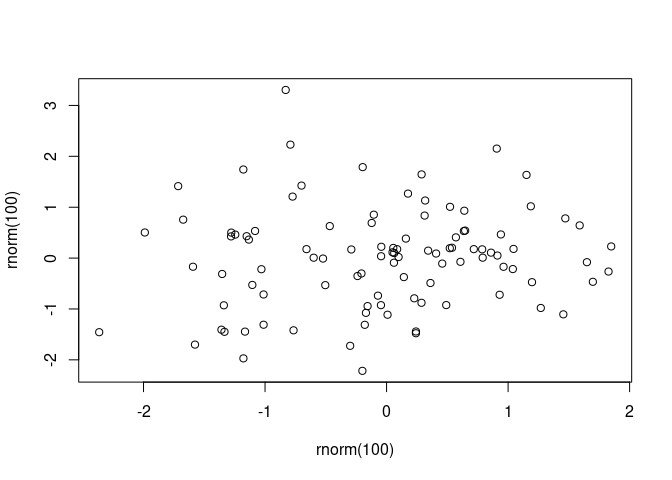

library(documentNumbering)
# a normal example in a main manuscript
my_counter = dn_counter$new("Figure ", "_")
my_counter
#> dn_counter:
#> prefix: Figure
#> file_replace: Figure_
#> count:
#> names:
#> NULL
# one where you want an "S" in front of the number
s_counter = dn_counter$new("Figure ", "_", "S")
s_counter
#> dn_counter:
#> prefix: Figure
#> file_replace: Figure_
#> count:
#> names:
#> NULLdocumentNumbering
The goal of documentNumbering is to provide figure and table numbering in Rmd / qmd output formats that don’t normally provide figure numbers. This package exists as an alternative to the number referencing provided by the bookdown package.
Installation
You can currently install from GitHub with:
# install.packages("remotes")
remotes::install_github("rmflight/documentNumbering")Examples
R6 Object
The way to use this is the actual {R6} object, dn_counter that gets updated, and contains all the information for printing, and which you initialize with whatever values you want for a prefix, and a character to use to replace any spaces in the prefix.
When it is initialized, there are no counts, and no names for the counts.
Increment the Count
my_counter$increment("descriptive_name")
my_counter
#> dn_counter:
#> prefix: Figure
#> file_replace: Figure_
#> count: 1
#> names:
#> [1] "descriptive_name"
s_counter$increment("a_name")
s_counter
#> dn_counter:
#> prefix: Figure
#> file_replace: Figure_
#> count: S1
#> names:
#> [1] "a_name"Here we can see that the count now includes a “1”, and In the case of the s_counter, we can now see that the “S” gets added directly to the counter, and the count is actually stored as a character.
We can also add multiple items at a time:
my_counter$increment(c("b_name",
"c_name"))Paste in Text
Now we want to refer to it in the text, we can do:
my_counter$label_text("descriptive_name")
#> [1] "Figure 1"Refer to Multiple
Often we want to refer to multiple figures at once:
# add another entry first
my_counter$increment("descriptive_2")
my_counter$label_text(c("descriptive_name", "descriptive_2"))
#> [1] "Figures 1-4"Change Name
If we’ve supplied the incorrect name, we can change it if you really want (I doubt this comes up much, but it’s there).
my_counter$rename("descriptive_name", "descriptive_1")
my_counter
#> dn_counter:
#> prefix: Figure
#> file_replace: Figure_
#> count: 1, 2, 3, 4
#> names:
#> [1] "descriptive_1" "b_name" "c_name" "descriptive_2"File Paths
In addition to just using the counter, there is the ability to modify the file names of the figures generated. This is particularly useful if you are creating figure files for a manuscript. If you set keep_md: true in the yaml header, and then you can add a custom figure processor, modify_path, which is one of the functions in the dn_counter object you instantiate:
For rmarkdown:
output:
word_document:
keep_md: trueFor quarto:
output:
docx:
keep-md: truefigure_count = dn_counter$new()
knitr::opts_chunk$set(fig.process = figure_count$modify_path)
figure_count$increment(c("plot", "plot2"))And then to rename the figure file, you set the chunk label to be the same as the figure number you want to access:
```{r}
#| label: plot
plot(rnorm(100), rnorm(100))
```
Alternatively:
```{r plot2}
plot(rnorm(100), rnorm(100))
```
The figure file will be prepended with Figure_1- in the output directory that is generated, which makes it much easier to refer to when uploading files or sharing them with collaborators.